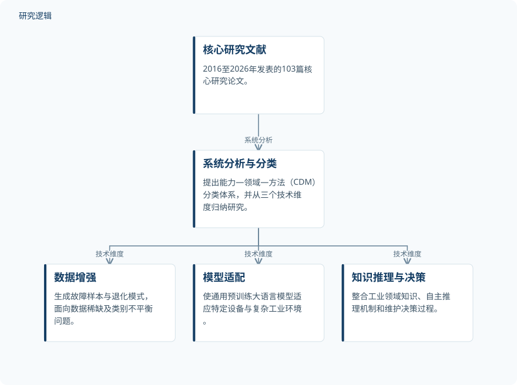

摘要解读
大语言模型驱动复杂工业过程预测性维护：综述与未来研究方向
Large Language Model-Driven Predictive Maintenance for Complex Industrial Processes: A Review and Future Research Directions
解读更新 2026-11-10 18:21 · 依据公开摘要整理，未核验全文细节
故障标签稀缺、工况变化和因果推理不足，制约着复杂工业过程中的预测性维护。这篇综述梳理大语言模型如何介入这些难题，其阅读价值在于提供技术分类与问题地图，而非证明某种模型已能可靠替代维护决策。
文章目录
预测性维护的难点，不只在故障识别
预测性维护（PdM）是智能运维的重要支撑。摘要指出，传统机器学习方法在复杂工业过程环境中面临标注故障样本不足、跨工况泛化较弱，以及高级因果推理能力欠缺等限制。因此，值得关注的不只是模型能否识别故障，还包括它能否适应设备与环境变化，并为原因分析和维护决策提供支持。
以CDM分类框架整理相关研究
这是一篇综述与未来展望，而非单一模型的实验报告。作者系统分析了2016至2026年发表的103篇核心研究论文，并提出分层的“能力—领域—方法”（Capability-Domain-Method，CDM）分类体系，旨在为这一研究领域建立统一分析框架。
摘要明确将相关技术归纳为数据增强、模型适配、知识推理与决策三个维度。这里的三个维度是组织文献的分析视角，不能直接理解为所有预测性维护系统都必须依次执行的处理流程。
依据摘要整理的文献分析与技术分类示意


概括综述的文献基础与三个技术分析维度；分支表示归纳关系，不表示维护系统的执行顺序，也不是论文原图。
下载 SVG图示关系说明
实线表示相邻阶段的信息流，虚线表示跨阶段联系或反馈。
核心研究文献 → 系统分析与分类：系统分析；系统分析与分类 → 数据增强：技术维度；系统分析与分类 → 模型适配：技术维度；系统分析与分类 → 知识推理与决策：技术维度
三类技术分别回应数据、适配与决策问题
在数据增强方面，综述讨论生成高保真故障样本和退化模式的方法，用以缓解工业数据稀缺与类别不平衡；在模型适配方面，关注如何让通用预训练大语言模型适应特定设备及复杂工业环境。摘要没有给出这些方法的量化收益，不能据此判断哪类技术效果更好。
知识推理与决策维度则整合外部工业领域知识、自主推理机制及维护决策过程，面向故障诊断、根因分析和维护决策。作者同时讨论运行可靠性、深度领域适配、统一评价标准与统一部署效率等挑战。这些内容呈现了综述的归纳重点，不等于相关挑战已经得到解决。
摘要不足以判断证据质量与落地边界
仅凭摘要，无法判断文献检索与筛选细节、纳入研究的数据样本规模和设备覆盖范围，也无法核对比较基线、评价指标、跨工况测试及现场验证范围。103篇是纳入分析的文献数量，不是独立实验样本量；摘要未报告上述细节，也不意味着论文没有讨论或相关研究没有开展验证。
阅读启发：把能力分类与验证证据对照起来
阅读启发：进一步阅读时，可沿三个技术维度追问，生成样本的保真性如何评价、设备适配能否跨工况成立、知识推理如何支持可核查的维护决策。摘要提出的物理信息大模型、工业领域专用模型、自主维护智能体和标准化开放基准平台，属于未来方向；应将这些建议与已经验证的效果明确区分。
以上为本站阅读启发与建议，不是论文已验证的结论。